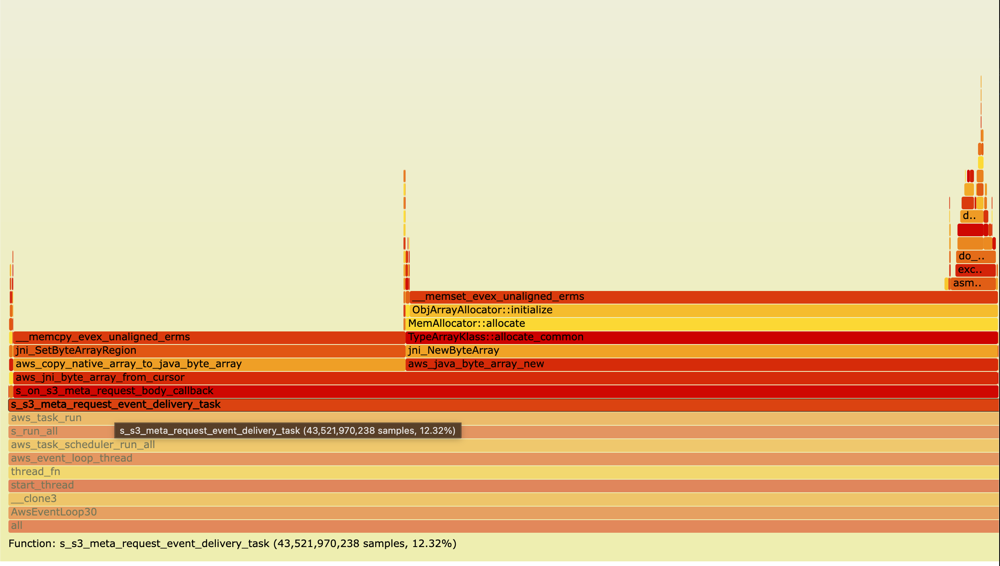
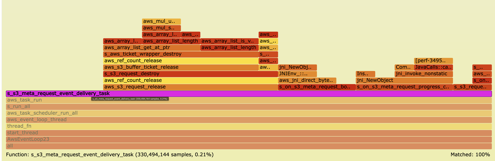
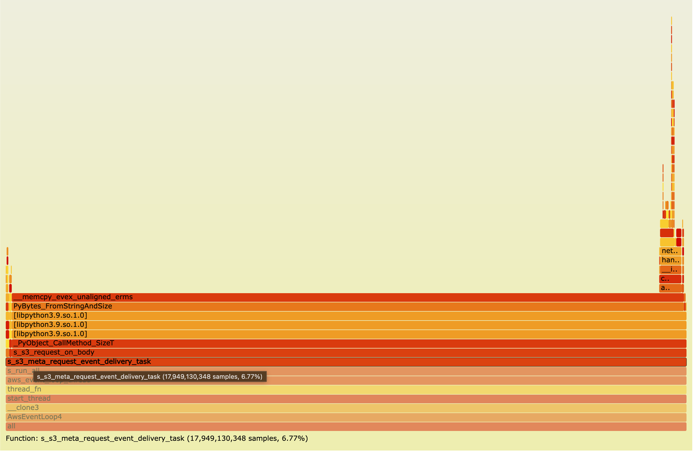
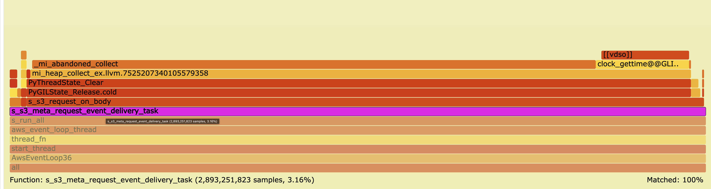

Interactive CPU profiles captured while downloading a 30 GiB file from S3.
Each flamegraph was recorded with perf at 99 Hz.
Click any card to open the full interactive flamegraph.
Event-delivery overhead measures time spent in
__s3_meta_request_event_delivery_task — the FFI crossing point.
C is baseline (100 %).
| Language | Throughput | Duration | Event Delivery % | vs C | Relative Throughput |
|---|---|---|---|---|---|
| C (baseline) | 69.4 Gb/s | 3.7 s | 0.04 % | 100 % | |
| Python | 33.5 Gb/s | 7.7 s | 6.77 % (169 ×↑) | 48 % | |
| Java | 15.7 Gb/s | 16.4 s | 12.32 % (308 ×↑) | 23 % | |
| Java DirectByteBuffer ✨ | 65.0 Gb/s | 3.96 s | 0.21 % (↓ from 12.32 %) | 93.7 % | |
| Python memoryview ✨ | 60.6 Gb/s | 4.25 s | 3.16 % (↓ from 6.77 %) | 87.3 % |
Native C implementation with zero FFI overhead.
The tiny event-delivery slice (0.04 %) is purely memory management
(aws_s3_request_release), not marshalling.
Serves as the performance ceiling for all other bindings.
FFI overhead jumps 169× versus C. Nearly all event-delivery time
(99.4 %) is PyBytes_FromStringAndSize — allocating Python
bytes objects and copying each C buffer into Python-managed memory.
GIL contention and reference counting add further pressure.
FFI overhead jumps 308× versus C. The binding creates a Java
byte array (byte[]) for each C buffer,
copying data across the JNI boundary into JVM-managed heap memory.
JNI call overhead and GC tracking compound the cost; 99.6 % of
event-delivery time is pure marshalling.
Note: switching to DirectByteBuffer (zero-copy, analogous
to Python's memoryview) brings Java throughput back to C
levels.
Both Java and Python expose a zero-copy path that hands the application a view into the C-owned buffer instead of copying the data. These tests confirm that virtually all of the RAM-download overhead is avoidable — the FFI cost drops to near-C levels the moment the copy is eliminated.
| Variant | Throughput | Duration | vs C baseline |
|---|---|---|---|
| C (baseline) | 69.4 Gb/s | 3.7 s | 100 % |
| Java — DirectByteBuffer | 65.0 Gb/s | 3.96 s | 93.7 % ↑ from 23 % |
| Python — memoryview | 60.6 Gb/s | 4.25 s | 87.3 % ↑ from 48 % |
Java binding updated to return a DirectByteBuffer that
wraps the C-owned buffer directly — no heap copy across the JNI boundary.
Throughput jumps from 15.7 Gb/s to 65.0 Gb/s (4.1×
improvement), nearly matching the native C baseline.
The residual gap (~7 %) is attributable to JNI framing and JVM object
creation, not data copying.
Python binding updated to expose a memoryview into the
C-owned buffer instead of copying into a bytes object.
Throughput jumps from 33.5 Gb/s to 60.6 Gb/s (1.8×
improvement). The remaining gap vs C is primarily GIL acquisition
and CPython interpreter overhead — not data copying.
Caveat: memoryview is zero-copy only while the caller holds the view;
any downstream processing that materialises the data into Python objects
will reintroduce the copy.
Zoomed snapshots of the s_s3_meta_request_event_delivery_task
frame from each flamegraph. The width of the bar is directly proportional
to CPU time — notice how it almost disappears with the zero-copy variants.
Java: byte[] copy (original) vs DirectByteBuffer (zero-copy)

s_s3_meta_request_event_delivery_task frame is
wide — nearly all of it is spent creating and copying byte[]
objects across the JNI boundary.

Python: bytes copy (original) vs memoryview (zero-copy)

PyBytes_FromStringAndSize dominates — each C buffer is
copied into a new Python bytes object on every callback.

Writing to disk bypasses the application-layer callback entirely; the C runtime handles I/O without crossing the FFI boundary. All three languages converge to near-identical throughput, confirming that RAM-download overhead is caused solely by FFI data marshalling, not by binding infrastructure.
| Language | Throughput | Duration | vs C (disk) |
|---|---|---|---|
| C | 14.08 Gb/s | 3.05 s | 100 % (baseline) |
| Java | 14.10 Gb/s | 3.05 s | 100.1 % |
| Python | 13.05 Gb/s | 3.29 s | 92.7 % |
C writing to disk — sets the disk-I/O bound baseline. No application callback invoked; all throughput comes from the CRT's internal write path.
Open C disk flamegraphPython writing to disk achieves 93 % of C performance — a dramatic contrast to the 48 % seen in the RAM-download test. The 7 % gap is attributable to Python interpreter startup cost and minor scheduling overhead, not data marshalling.
Open Python disk flamegraphJava writing to disk matches C throughput exactly. In the RAM-download test Java reached only 23 % of C — meaning 77 % of Java's overhead is purely FFI marshalling, eliminated the moment no callback crosses the language boundary.
Open Java disk flamegraphSupplementary benchmark suites exploring 3rd-party AWS SDK clients and alternative execution models (free-threading Python, Transfer Manager, etc.).
Profiles of 3rd-party AWS SDK clients backed by CRT on a
10,000 × 1 MiB S3 download workload.
Includes system-level perf flamegraphs and Python-level
py-spy profiles. The Java SDK CRT client achieves 22.88 Gb/s;
the Python free-threading variant reaches 5.18 Gb/s.
Each flamegraph was generated from perf record -F 99 --call-graph dwarf
and converted to interactive SVG. The x-axis width is proportional
to CPU time; y-axis height represents call-stack depth.
Colors are arbitrary (no performance meaning).
The critical region to compare across profiles is
__s3_meta_request_event_delivery_task: it is a thin sliver in C
(0.04 %) but dominates the Java profile (12.32 %) and is clearly visible in Python
(6.77 %). Click a frame to zoom; press Ctrl+F to search.